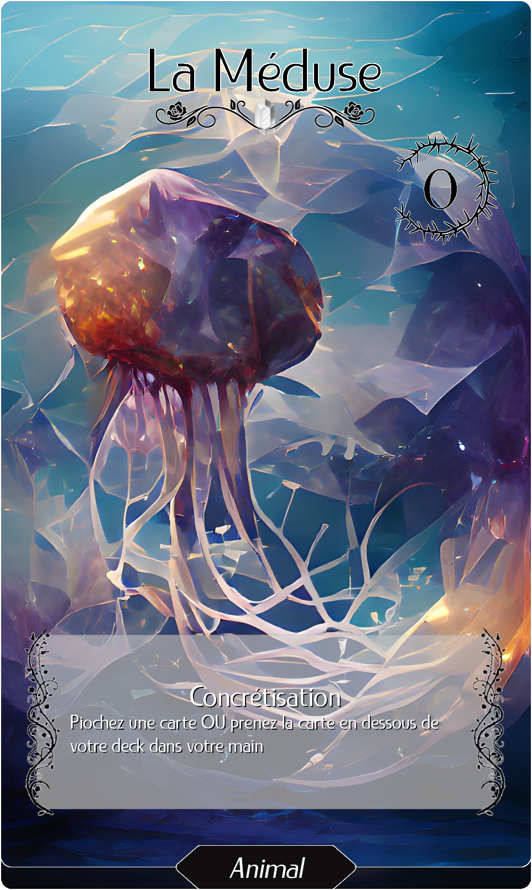
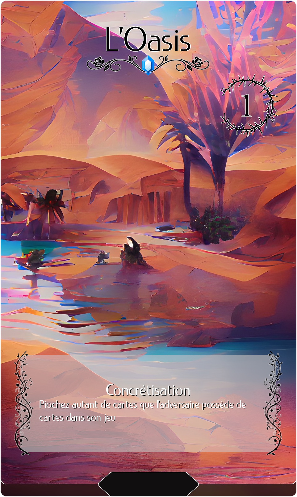
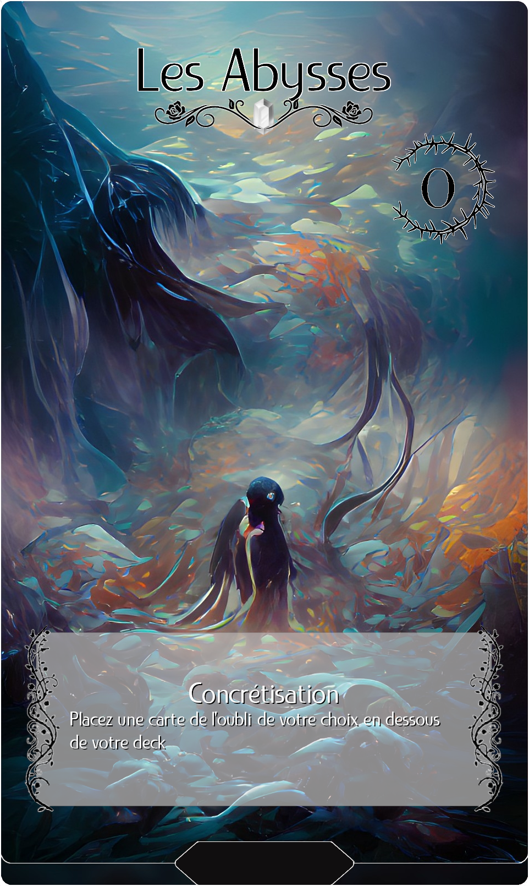
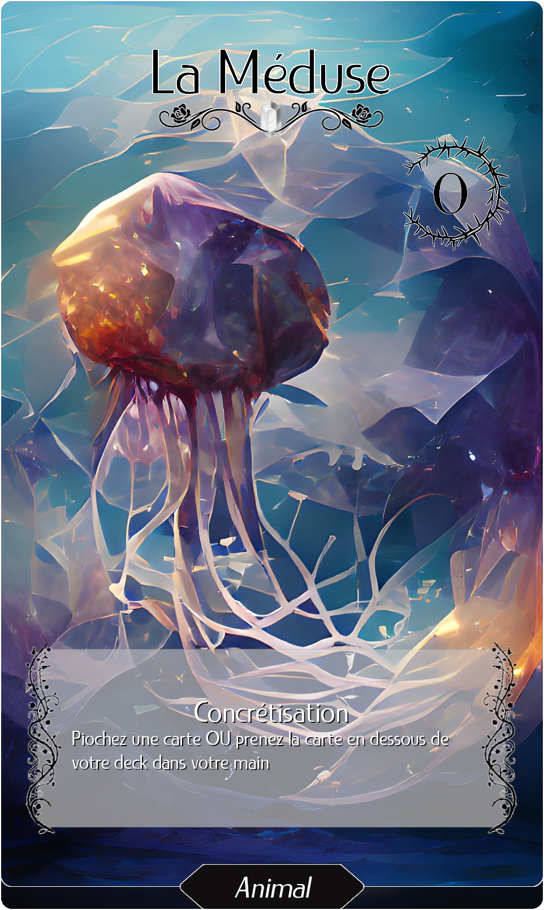
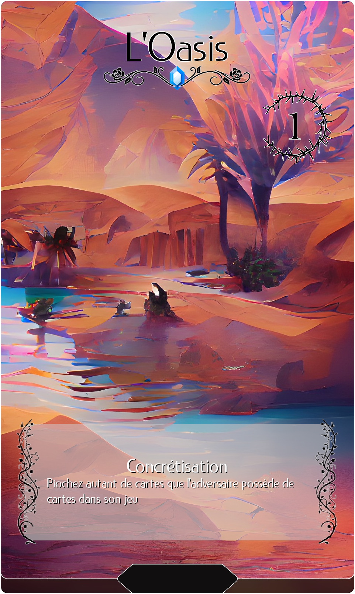
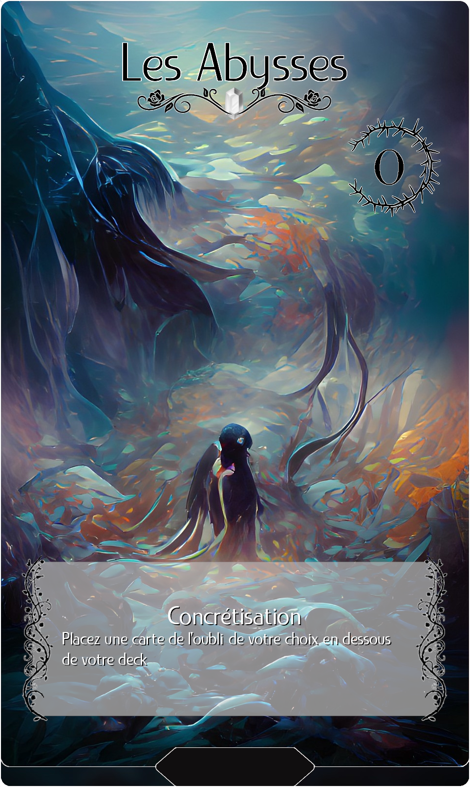

Jeu de cartes à collectionner
À partir d'images cryptiques et abstraites générées par les dernières technologies de l'IA, j'ai eu l'idée d'en faire un jeu de cartes, à la fois contemplatif et mystérieux.
Le défi de Game Design a été de s'approprier les thématiques renvoyées par le côté onirique et merveilleux des images et de les transposer dans un gameplay inspiré des jeux de cartes à collectionner mainstream, notamment Yu-Gi-Oh.
Deux decks, un seul plateau commun où les deux joueurs s'affrontent pour la domination du songe en concrétisant les différents rêves qu'ils ont en main, venez découvrir un jeu simple à comprendre mais qui offre un nombre infini de possibilités avec plus d'une centaine de cartes, réparties en 4 raretés différentes.
>> En savoir plus